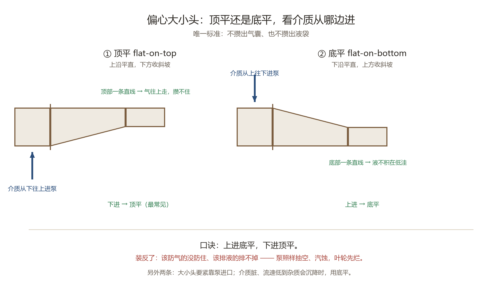

它是什么
大小头 = 异径管。同心的大小头缩口对称；偏心的是一边的管壁拉成直线，另一边收成斜坡——所以分「顶平」和「底平」两种装法。
为什么不能随便装
气泡永远往上浮，液体永远往下沉。管子里只要有局部高点，气就攒在那里变成气囊；有局部低洼，液就积在那里排不掉。
- 气囊：被水流带进泵，局部压力骤降、液体汽化 → 汽蚀。轻则噪音振动、流量扬程下降，重则叶轮几百小时就报废。
- 液袋：液体积在低洼排不走，冬天冻、平时滞留变质，管径也被占掉一块。
偏心大小头的全部意义就是：别给气泡攒窝，也别给液体挖坑。
怎么选（口诀）
上进底平，下进顶平。
- 介质从下往上进泵 → 用顶平（上沿一条直线，气贴着顶走，攒不成一坨）
- 介质从上往下进泵 → 用底平（下沿一条直线，液沉下去也有路可走）
垂直管怎么装都行；水平吸入管按这条选。

偏心大小头两种装法
同心大小头什么时候用
- 垂直管（气液都不容易偏积）
- 泵的出口（压力高、流速快，不担心攒气）
- 气体 / 蒸汽管（没有液体要沉）
- 内衬、防腐管道（同心好做衬里）
不建议用的地方：水平吸入管、水平凝水管、以及有固体颗粒容易沉降的管路。
施工上的三条
- 大小头要紧靠泵进口（一般不超过一两倍管径）。
- 介质脏、流速低到杂质会沉降时，用底平。
- 后面紧跟一个向上的弯头时，可以按弯头走向调整，但仍然守住「不攒气囊、不攒液袋」。
一句话记
同心讲的是好看好施工，偏心讲的是控制气囊液袋。